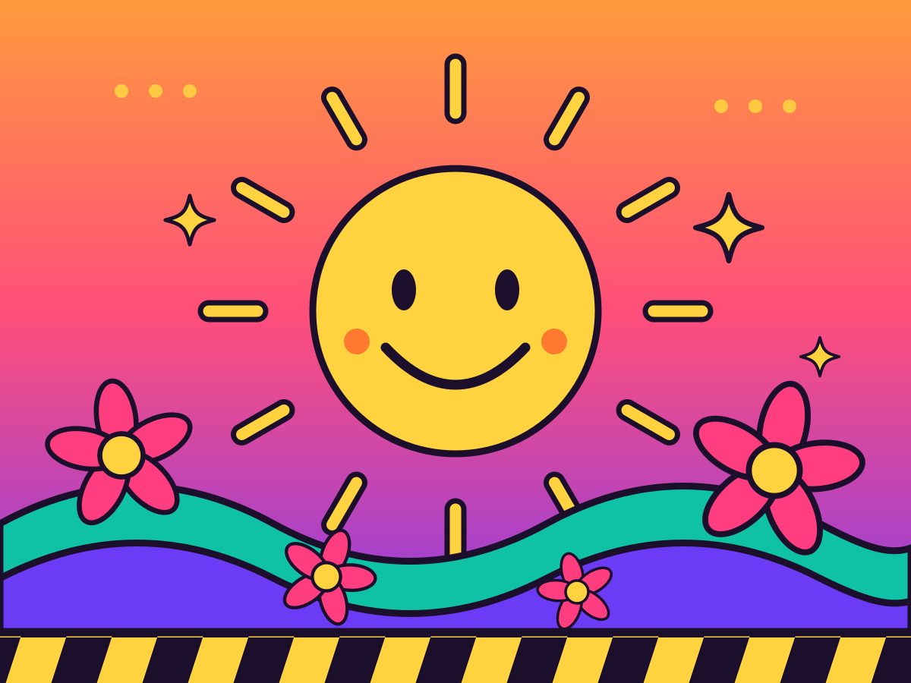

PROJECT 01 / 站内漫游
把网页做成一颗会发光的糖
这里没有灰白极简。只有 1970 年代的橙、粉、紫，粗黑描边，一张贴在角落的笑脸，还有一台专门把自己关掉的机器。四个页面，全部手写，双击就能打开。
- 4个页面
- 18条名言
- 7个项目点子
- 1台无用机器

三条路，随便挑一条
这是个四页的小站：一页读句子，一页攒点子，一页浪费三分钟，剩下的就是你现在站的地方。
这份站点交的作业
八项要求，逐条对照。右边是它落在哪个文件里 —— 你可以直接打开看。
1
首页：一张 hero 大图，加一份站点概览
index.html
2
名言页：至少 15 条名言（这里放了 18 条）
quotes.html
3
DRY 导航：只写一次，由 JavaScript 注入每一页
nav.html · nav.js
4
项目页：至少 5 个项目点子（这里放了 7 个）
project.html
5
名言页做过设计，顶部 hero 随机展示一条名言
quotes.html · style.css
6
无用机器页：一个极简的数字玩具
machine.html
7
机器页里还带一个能玩的小游戏
machine.html · machine.js
8
整站统一风格并收尾：链接能点、图片能显、手机上能看
every page
为什么这么花
多巴胺不是配色方案，是一种态度
高饱和的橙和粉会让人想起便利店的招牌、七十年代的唱片封套、还有小时候贴在铅笔盒上的贴纸。它们不高级，但它们有精神。这个站点的每一个圆角、每一道粗边、每一条硬阴影，都在说同一句话：网页可以是有趣的。